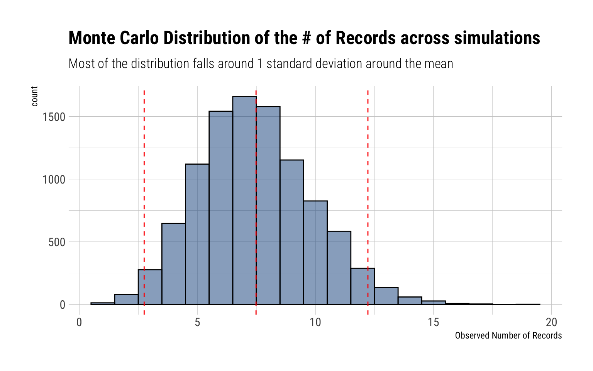
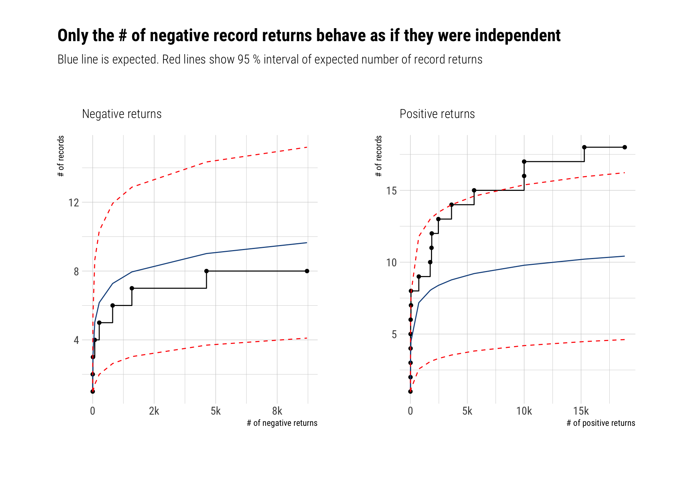
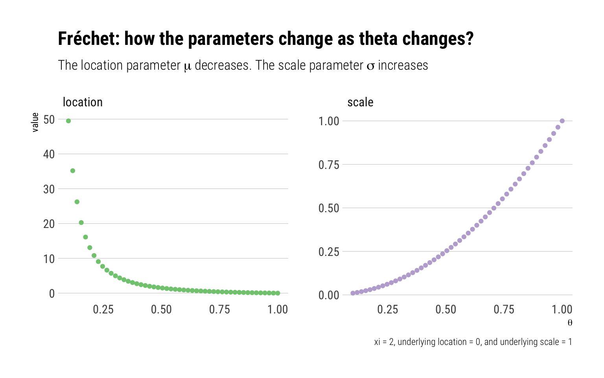
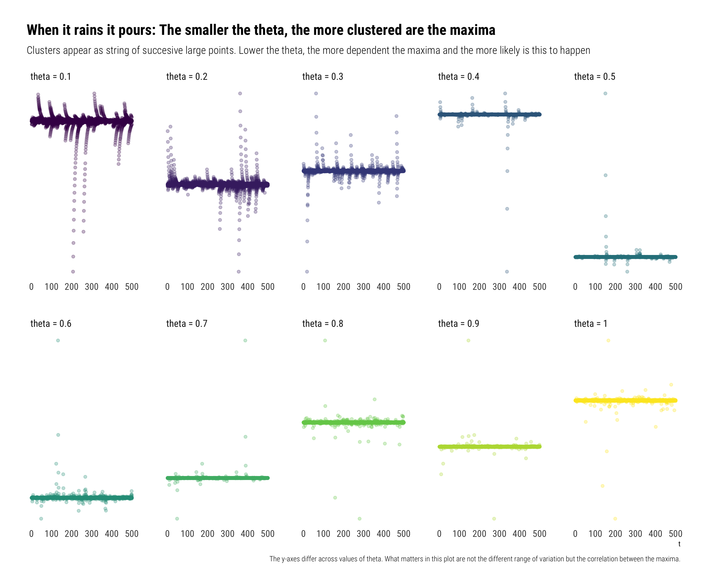

The Fisher-Tippet theorem (a type of CLT for the tail events) rests on the assumption that the observed values are independent and identically distributed. However, in any non trivial example, time series will reflect an underlying structure that will create dependence among the observations. Indeed, tail events tend to occur in clusters. Does this mean that we cannot use the Extreme Value Theory (EVT) to model the maxima of a time series?
The answer? Not necessarily. We can only use EVT if the maxima of the time series behave like they are independent. In this blogpost, I’ll give:
- An intuitive explanation of the conditions we need to set on the time series to be able to use EVT.
- Show how we can test whether these conditions hold for real data: S&P500 returns
- How, once the conditions hold, we can generalize the Fisher-Tippet theorem by replacing the independence assumption.
Note that thorought the blogpost I assume that the time series is stationary.
The D-Condtions
The D-conditions limit the dependence structure between the maxima of a time series, thereby allowing us to use EVT. There are two of them:
The \(D\) condition limits the long-range dependence between the maxima of a time series. That is, separate the time series into two intervals: the \(D\) condition states that the maxima of the two separated intervals are approximately independent.
The \(D'\) condition limits the local dependence structure between the maxima of a time series. That is, separate the time series into small blocks. Count as an exceedance an observation that exceeds a given large threshold. The \(D'\) condition postulates that the probability of observing more than one exceedance in a block is negligible.
If both \(D\) and \(D'\) are satisfied, then the dependence between far-apart maxima and local maxima is largely limited. Therefore, we can generalize the Fisher-Tippet Theorem to work with these type of time series. However, how would one check these conditions with real data?
Record breaking observations
We can compare the number of record-breaking observations in our time series with the expected number of record-breaking observations for independent observations. If they are roughly similar, we can conclude that both the \(D\) conditions hold for our time series. Let’s begin defining how we count the number of record-breaking of observations:
\[ N_n=1+\sum_{k=2}^n1_{X_k>M_{k-1}}, \quad n\geq2 \] Then, it can be shown that if the observations are independent, the expected number of record-breaking observations is:
\[ E[N_n]=\sum_{k=1}^n \frac{1}{k} \approx \log n +\gamma \] Where \(\gamma\) is Euler’s constant. Therefore, for independent observations, the number of record-breaking observations grows very slowly. We can also check the variance of the number of record-breaking observations for independent observations:
\[ var(N_n)= \sum_{k=1}^n \left(\frac{1}{k} - \frac{1}{k^2} \right) \] Let’s try to get some intuition for how these formulas bound the number of record breaking observations when independence holds.
A Monte-Carlo proof
To prove this statement, I’ll perform a Monte-Carlo experiment with \(10^4\) different independent time series with marginal distribution Cauchy. For each time series, I’ll simulate 1,000 observations. Then, we can compare the Monte Carlo distribution of the number of observed record-breaking observations with the expected number.
SP500 tail returns: independent?
We can divide the returns of the S&P500 in positive and negative returns. Can we model the tail returns for either of them with EVT? As we’ve seen, the answer depends on the \(D\) conditions: are the maxima too clustered? are far-apart maxima related? If the answer to both questions is no, then we can use EVT.
To test it out, we will compare the number of record breaking returns (both positive and negative) with the expected number of record breaking returns if the returns where independent. In this analysis, I use all the data from 1948 up to the present day and I’ll model the log returns:

Generalizing the Fisher-Tippet Theorem
If both \(D\) conditions hold, we can generalize the Fisher-Tippet Theorem. Crucially, the maxima of the time series will still converge to one of the \(GEV_{\xi}\) distributions. However, it will converge to a transformed version of the \(GEV\) thus:
Let ( {X_{i}} ) be a dependent time series and let ( {{i}} ) be independent variables with the same marginal distribution. Set ( M{n}={X_{1}, , X_{n}} ) and ( {n}={{1}, , {n}} . ) If the \(D\) conditions hold, then: [ {({n}-b_{n}) / a_{n} z} (z), n ] if and only if [ {(M_{n}-b_{n}) / a_{n} z} G(z) ] where ( G(z)={GEV_{}}^{}(z) ) for some constant ( ) which is called the extremal index of the time series.
Consequences
The \(\theta\) is a measure of the clustering of the maxima. The lower the theta, the more clustered are the maxima.
If the observations are independent, \(\theta = 1\). Thus, the extremal index is a measure of dependence between the data. The smaller the extremal index, the more dependent are the maxima of the time series. In particular:
\[ P(M_n < x) \approx F(x)^{n\theta} \]
Therefore, we can consider these maxima arising from a dependent time series as equivalently arising from \(n\theta\) independent observations with the same marginal distribution.
- Using the independence assumption leads us to underestimate the quantiles of the possible maxima. Indeed, for a large probability p:
\[ F^{-1}(p) \approx GEV^{-1}\left(p^{n \theta}\right)>GEV^{-1}\left(p^{n}\right) \] Indeed, when considering the dependence of the data, the VaR risk (for say 99%) measure will decrease. The probability of none of the extreme events ever happening decreases. However, as we will see, when it rains, it pours.
- Crucially, both \({GEV_{\xi}}^{\theta}(z), {GEV_{\xi}}(z)\) share the same shape (\(xi\)) parameter: thus, they share the same tail behavior. Indeed, by raising the distribution to the power of \(\theta\), the parameters of the distribution change thus:
\[ \tilde{\mu}=\mu-\frac{\sigma}{\xi}\left(1-\theta^{-\xi}\right), \quad \tilde{\sigma}=\sigma \theta^{\xi}, \quad \tilde{\xi}=\xi \]
That is, when \(\xi > 0\) and the MDA of the distribution is the Fréchet, the location and scale parameters change thus:

Why does the mean increase so much when the maxima are \(\theta\) is small? The answer is in the dependence of the maxima: when \(\theta\) is small, the maxima are dependent. Thus, when one of them happens, all the other events also tend to happen. When it rains, it pours.
To show this, I’ll simulate observations from an Autoregressive(1) Cauchy Sequence:
\[ X_t = \rho X_{t-1} + (1-\rho) Z_t \\ Z_t \sim Cauchy \]
The larger \(\rho\), the more dependent the data. Indeed, it can be shown1 that \(\theta = 1 - \rho\). Therefore,

Conclusion
The serial dependence present in a time series invalidates the independence assumption in the traditional Fisher-Tippet Theorem. Nevertheless, we can still use Extreme Value Theory to model the maxima of a time series provided that the \(D\) conditions hold. The \(D\) conditions limit both the long-range and the local dependence between the maxima. We can test whether these conditions hold in real data by comparing the number of record breaking observations in the data with the expected number of record breaking observations if the observations were independent. Once these conditions hold, we can generalize the Fisher-Tippet theorem to model the maxima of time series. Indeed, the same Maximum Domain of Attractions still hold: however, we raise these distributions to the power of \(\theta\): the extremal index. The extremal index is a measure of dependence in the data. The smaller \(\theta\), the more clustered will be the maxima of the time series.
Footnotes
Calculating the extremal index of a class of stationary sequences↩︎